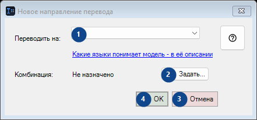
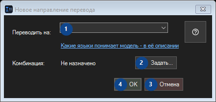

Новое направление перевода
Для чего это окно
Прочитайте пояснения к номерам, выберите нужные значения и продолжите командой окна.


Порядок действий
Прочитайте пояснения к номерам, выберите нужные значения и продолжите командой окна.
Элементы
1. Переводить на:
Выберите или введите значение для соседней подписи. Проверьте его перед продолжением.
Ваши сочетания клавиш2. Задать...
Используйте команду, когда нужно указанное действие. Прочитайте запрос подтверждения перед согласием.
Ваши сочетания клавиш3. Отмена
Используйте команду, когда нужно указанное действие. Прочитайте запрос подтверждения перед согласием.
Ваши сочетания клавиш4. OK
Используйте команду, когда нужно указанное действие. Прочитайте запрос подтверждения перед согласием.
Ваши сочетания клавиш